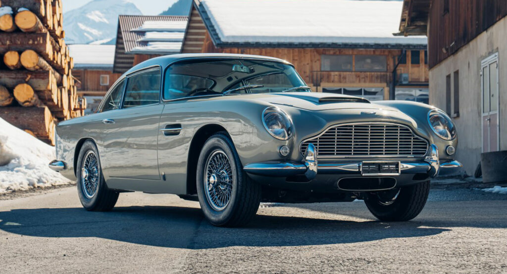
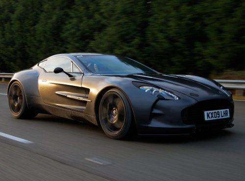

Welcome to ASTON MARTIN official website
About Us!
Welcome to Aston Martin, a luxury car manufacturer renowned for producing some of the most iconic and sought-after vehicles in the world. Since our founding in 1913, we have remained committed to creating beautiful, high-performance cars that embody the spirit of power, elegance, and sophistication. Our passion for precision engineering, exquisite design, and unparalleled craftsmanship is evident in every car that we produce, making Aston Martin the ultimate symbol of automotive luxury.At the heart of Aston Martin is a dedication to our customers. We strive to provide the highest level of service and support, ensuring that our customers enjoy a seamless ownership experience. Whether you are a seasoned Aston Martin enthusiast or a first-time buyer, we are here to guide you every step of the way.
At Aston Martin, we pride ourselves on delivering a unique driving experience that is second to none. From the sleek lines of our signature bodywork to the exhilarating sound of our engines, every aspect of our vehicles is carefully crafted to provide the perfect combination of power and refinement. Our commitment to innovation and excellence has led us to push the boundaries of automotive technology, creating cars that are not only beautiful but also intelligent and intuitive. From our state-of-the-art infotainment systems to our advanced safety features, we are constantly exploring new ways to enhance the driving experience for our customers.Aston Martin is also dedicated to giving back to the community. We support various charitable initiatives
Our rich history and tradition of excellence have made Aston Martin a true icon of the automotive industry. From our first car, the Coal Scuttle, to our latest models such as the DBX and the Valhalla, we have continued to innovate and lead the way in the luxury automotive market.Our commitment to excellence extends beyond our cars and into our brand partnerships, lifestyle experiences, and community involvement. We have collaborated with some of the world's most prestigious brands, such as Red Bull Racing and TAG Heuer, to create limited-edition vehicles that embody the best of both brands.Thank you for choosing Aston Martin, and we invite you to experience the power and elegance of our vehicles for yourself.
Our Cars
-
Aston Martin DB5
This iconic car became famous for its appearance in several James Bond movies, including Goldfinger and Thunderball. With its classic design and powerful engine, the DB5 is considered one of the most beautiful cars ever made.
Learn More -
Aston Martin One-77
The One-77 is a limited edition supercar with only 77 units produced. It boasts a handcrafted aluminum body, a carbon-fiber monocoque chassis, and a 7.3-liter V12 engine that produces 750 horsepower. Its exclusivity, breathtaking design, and outstanding performance make it a favorite among car enthusiasts.
Learn More -
Aston Martin DBS Superleggera
The DBS Superleggera is a high-performance grand tourer that combines speed, style, and luxury. Its 5.2-liter V12 engine produces 715 horsepower and can go from 0 to 60 mph in just 3.2 seconds. The car's sleek and aggressive design, combined with its refined interior, make it a favorite among Aston Martin fans..
Learn More